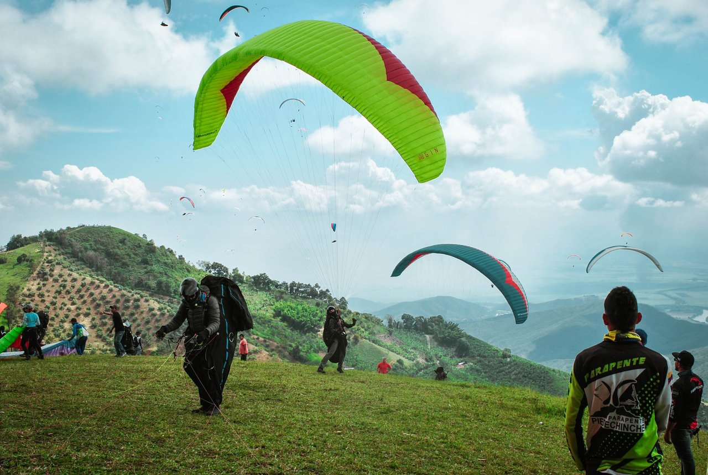

Negocios en Paipa: Un Destino con Potencial
Paipa no solo es un destino turístico, también es un lugar con un creciente potencial para los negocios. Gracias a su ubicación estratégica, a pocos kilómetros de Tunja y Bogotá, Paipa se ha convertido en un punto clave para empresas del sector turismo, comercio y servicios.

Paipa también se está posicionando como un hub de negocios para pequeños y medianos emprendedores que buscan expandirse en el mercado regional. La creación de nuevas infraestructuras y la mejora de los servicios públicos han hecho de esta ciudad un lugar atractivo para invertir en negocios sostenibles y ecológicos. Además, la acogedora comunidad local y la calidad de vida que ofrece Paipa atraen a inversionistas que buscan un equilibrio entre trabajo y descanso.
Oportunidades de negocios en Paipa
Sector turístico: Inversiones en hotelería, restauración y actividades turísticas que aprovechan la belleza natural y los termales.
Desarrollo inmobiliario: Con la creciente demanda de visitantes, hay una oportunidad significativa para la construcción de hospedajes y centros recreativo
Comercio local: Los negocios locales tienen un gran potencial para ofrecer productos típicos de Boyacá, como artesanías, textiles y alimentos.
Con el auge del turismo y la diversificación de las oportunidades comerciales, Paipa está viendo un florecimiento de eventos empresariales y ferias locales que promueven la cooperación y el intercambio de ideas entre emprendedores y empresarios. Esta dinámica está fortaleciendo la red de negocios, lo que aumenta aún más el potencial de la ciudad para convertirse en un centro económico regional clave, con una gran variedad de servicios y productos destinados tanto a los turistas como a los residentes permanentes.
Si estás buscando nuevas oportunidades comerciales, Paipa te ofrece el entorno ideal para emprender y expandir tu negocio, aprovechando su proximidad a importantes ciudades y su creciente flujo de turistas.

El destino donde emprender y disfrutar van de la mano
Paipa: Donde la belleza natural se encuentra con el potencial de los negocios.
Carlos
Me encanta la historia y quisiera saber más detalles sobre el Monumento a los 14 lanceros. ¿Tiene algún costo la entrada o se realizan visitas guiadas?
Reply
Mariana
¿La Casa de la Cultura tiene exposiciones permanentes o varían según la temporada?
Reply
Admin
¡Hola, Carlos!,¡Nos alegra mucho tu interés! La entrada al Monumento a los 14 lanceros es libre y gratuita. Además, se organizan visitas guiadas con frecuencia, sobre todo en temporadas altas. Las guías suelen compartir datos muy interesantes sobre la Batalla de Paipa y su impacto en la independencia. ¡Esperamos que disfrutes mucho tu visita!
Reply
Admin
¡Hola, Mariana!, ¡Buena pregunta! La Casa de la Cultura cuenta con una exposición permanente que incluye artefactos y documentos históricos de Paipa y Boyacá. Sin embargo, también organizan exposiciones temporales y eventos culturales a lo largo del año. Te recomendamos revisar su calendario en redes sociales o en su página web para ver qué estará disponible cuando visites.
Reply
Lucia
¿Cuánto tiempo recomiendan dedicarle a estos sitios históricos para aprovechar al máximo el recorrido?
Reply
Admin
¡Hola, Lucía! ¡Depende de cuánto te guste explorar cada lugar. Si quieres hacer una visita detallada, te recomendamos dedicar medio día para abarcar el Monumento a los 14 lanceros, el Puente de Boyacá y la Casa de la Cultura. Puedes incluso tomar un día completo si prefieres una experiencia más pausada y completa. ¡Seguro te sorprenderán los detalles históricos que ofrecen!
Reply